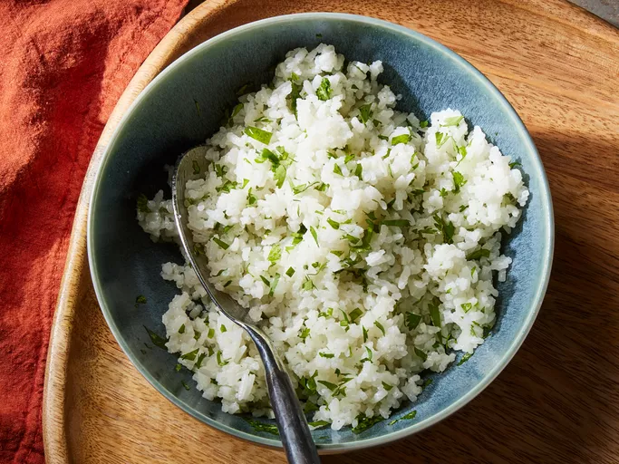

Asian Coconut Rice Recipe
Home

Coconut rice is so simple to make and delicious. It'll quick become a go-to in your side dish rotation. While coconut rice can be found accross Asian continent and throughout the Pacific, this recipe takes inspiration from a traditional Malaysian recipe called Nasi Iemak. Countries like Thailand, Singapore, and Indonesia all have similar versions of coconut milk rice, so you can really explore the different ways to do it.
And how to make it?
- Coconut Milk: a can of it.
- Water: 1 and 1/4 cups of water.
- Sugar: Two teaspoons of sugar to add sweetness. (Avoid that for Brazilian trying this out.)
- Salt: 1 1/2 teaspoons of salt enhanced the overall flavor of coconut rice (of course, that's the goal of salt).
- Jasmine Rice: Opt for Jasmine rice for this recipe.
- Coconut oil: Stir in 1 teaspoon coconut oil at the end to add flavor.
Now that we have the ingridients, shall we start with the real game?
- Gather the ingridients
- Place the rice in a fine mesh strainer, and rinse with cold water, stirring rice using your fingers to remove excess starch, until water from rice runs clear, about 1 minute.
- Place rinsed rice, coconut milk, water, sugar and salt in a medium saucepan; stir until sugar dissolves, about 1 minute.
- Bring mixture in saucepan to a boil over medium heat. Cover, reduce heat to low, and, simmer, undisturbed, for 11 minutes. Turn off heat; steam, covered, until rice is tender and liquid is absorbed, about 10 minutes. Uncover and gently stir in coconut oil.
- Enjoy, of course.